Run Instrument Setup (Loading Firmware)
Time Required
The following Instrument Setup for Firmware procedures on specific System SW can be found below:
Note: If any hardware upgrades are required (i.e. RTFs, etc), install the upgrades first, then run Firmware.
Note: Screen shots are for reference ONLY.
 From the FSE Shield, Click on the Instrument Setup icon.
From the FSE Shield, Click on the Instrument Setup icon.
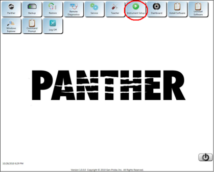
A yellow-highlighted Active X warning may appear near the top of the page.
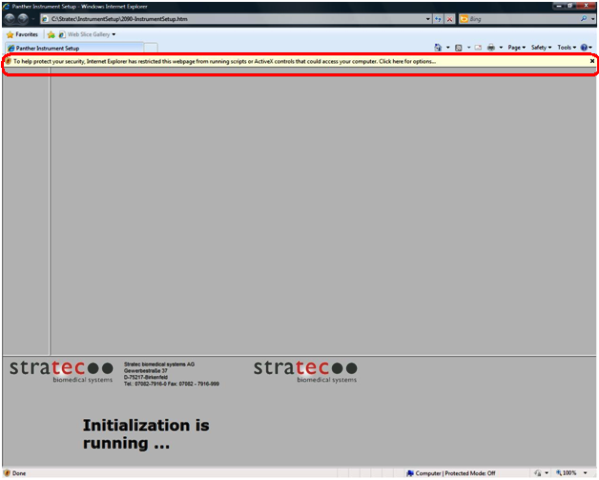
- Right-click on the yellow-highlighted prompt.
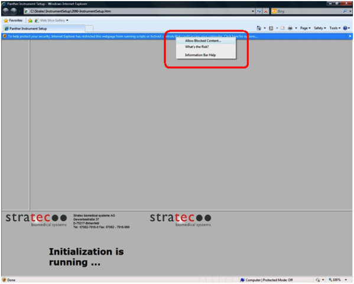
- Select the Allow Blocked Content option.
A security warning dialog box appears.
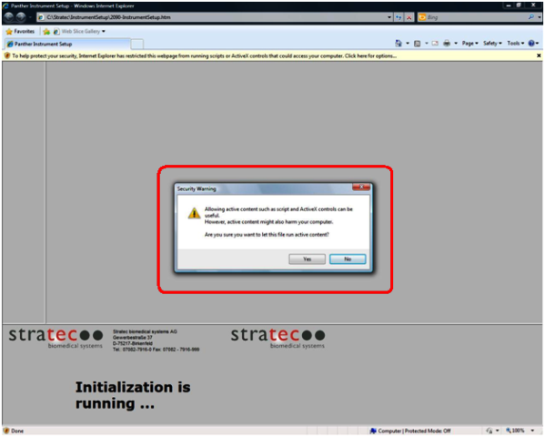
- Click Yes.
The main Panther Instrument Setup page appears.
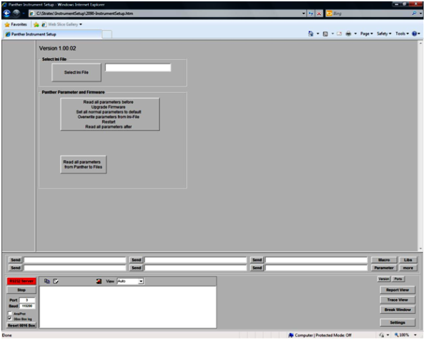
- Click the Select Ini File button.
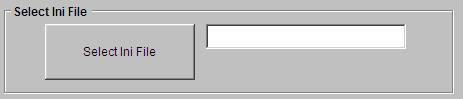
An Open dialog box appears.
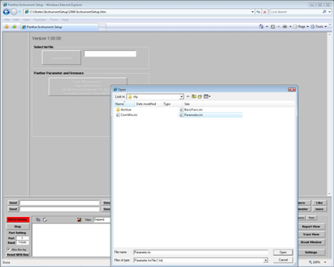
- Select Parameter.ini and click Open.
- Click Read all parameters Upgrade Firmware Set all normal parameters to default Overwrite parameter from Ini-File.
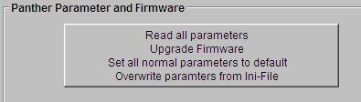
- Click Yes.
A Downloading Active message appears. The firmware upgrade can take up to 1 hour.
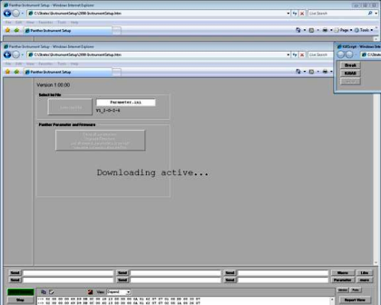
When installing new modules or PCBs the following message may appear.
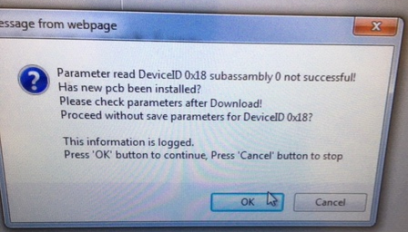
A Firmware Upgrade successfully Finished dialog box appears.
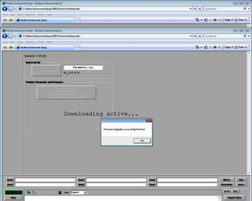
- Click OK.
- If downloading firmware on a ATLAS (ROKA/IEH) System, please follow TB-01307 and update all incubator parameters per the TB.
- Make sure to update X-Axis parameters if changed prior to downloading firmware, TB-02024.
- If this is an installation, continue to Pipettor Teaching.
Run Instrument Setup (Panther)
- From the FSE Shield, ensure no other programs are running.
- Click Instrument Setup on the Panther Fusion shield.
- Click Select XML File.
- In the Explorer window, select the appropriate firmware XML file.
Refer to the applicable Technical Bulletin (TB) for your installation.
- Click Full Instrument Setup.
The script will automatically update firmware and parameters on Panther modules.
This process will take 15–50 minutes.
Note: A prompt may appear during this process stating that a new COP PCB may have been installed and asking whether or not to continue. Select Yes if this message appears. This should have no effect on the firmware upload if new modules have been installed.
- Click OK when the script confirms that firmware has been uploaded successfully.
Verify that there are no issues in the instrument setup run report that appears and then close the report.
If firmware is not uploaded successfully, suspend this procedure and troubleshoot.
Run Instrument Setup (Fusion)
- With the Instrument Setup program still open, click Select XML File.
- In the Explorer window, select the appropriate firmware XML file.
Refer to the applicable Technical Bulletin (TB) for your installation.
- Click Full Instrument Setup. The script will automatically update firmware and parameters on Fusion modules.
This process can take 15-30 minutes.
Note: A prompt may appear during this process stating that a new COP PCB may have been installed and asking whether or not to continue.
Select Yes if this message appears. This should have no effect on the firmware upload if new modules have been installed.
- Click OK when the script confirms that firmware has been uploaded successfully.
Verify that there are no issues in the instrument setup run report that appears and then close the report.
If firmware is not uploaded successfully, suspend this procedure and troubleshoot.
- If downloading firmware on a ATLAS (ROKA/IEH) System, please follow TB-01307 and update all incubator parameters per the TB.
- Make sure to update X-Axis parameters if changed prior to downloading firmware, TB-02024.
- If this is an installation, continue to Pipettor Teaching.
- From the FSE Shield Click on Instrument Setup.
- The following Instrument Setup Splash Screen will appear.

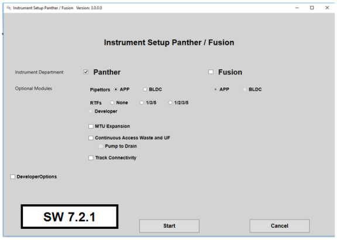
Note: Screenshots are for reference only.
Note: If Panther Fusion, ensure all 8 Sidecar COP's dip switches are facing down.
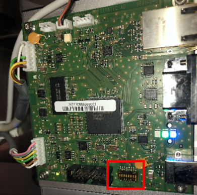
- Select the options that apply in each of the following sections.
- Instrument Department
- If the instrument is Panther, select only Panther.
- If the instrument is a Panther Fusion, select both Panther and Fusion.
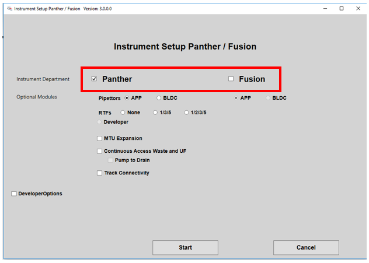
- Optional Modules
- Select the type of Pipettor installed for both the Panther and the Fusion (if applicable).
Note: APP = Air Pipettor Pump, BLDC = Brushless DC Pipettor.
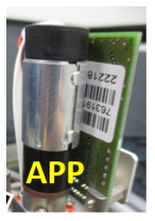
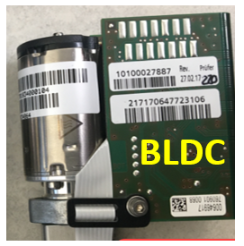
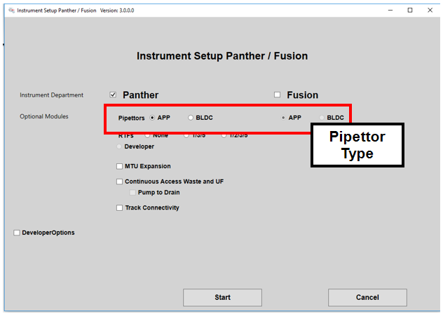
- Select the RTFs installed. RTF1, RTF3, and RTF5 are used for HIV, HCV, and HBV. RTF2 is used for BV, CV/TV, and SARS/FLU Multiplex.
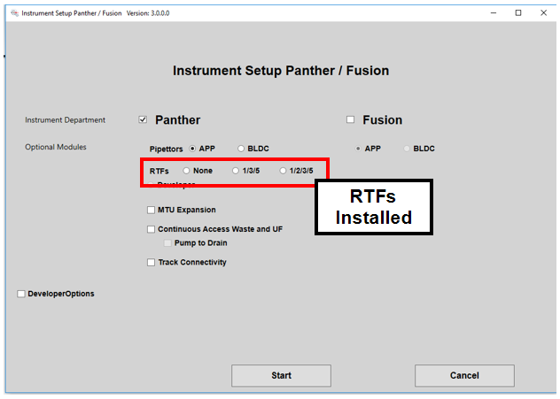
- Select all applicable Panther Plus Upgrades.
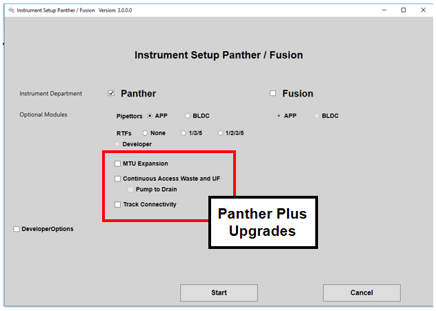
- Developer Options (Fusion only)
Note: This section will default to unchecked, but the options will automatically be selected when Fusion is selected, or if Fusion and Continuous Access Waste and UF are selected earlier in the procedure.
- When Fusion is selected, the required options will be automatically selected. Verify the correct settings by checking Developer Options.
- For a standard Panther Fusion, verify MRSA Lysing HW and Mixer 21 Positions are checked.
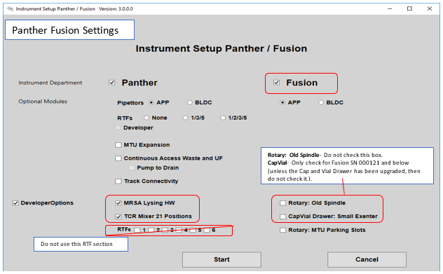
For Panther Fusion Plus, verify Rotary: Parking Slots is checked.
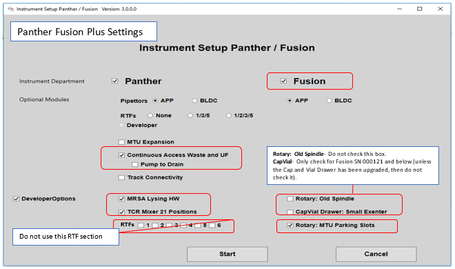
- When all settings are set, select Start.
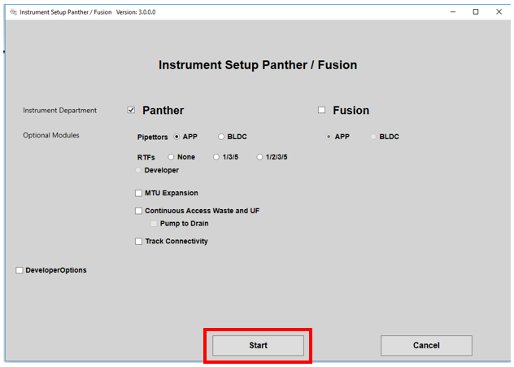
- From the new screen click the Select XML File button.

- If a Panther Fusion, from the Pop Up Window, ensure both xml files are visible.
If both xml files are not visible, STOP and EXIT.
Launch instrument setup again and re-configure the Splash Screen correctly.
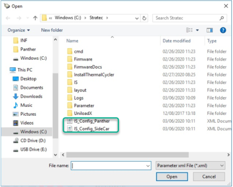
- For Panther ONLY Systems select IS_Config_Panther and proceed to Step 9.

- For PantherFusion Systems:
- First Select IS_Config_Panther
- Successful run Instrument Setup, by completing Step 8-10 below
- Return to Step 4 and Select IS_Config_Sidecar.xml.
- Proceed to Step 9 and complete the rest of this procedure.
- Click on Full Instrument Setup.
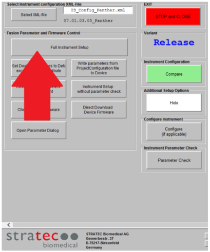
- The Firmware Update will begin.
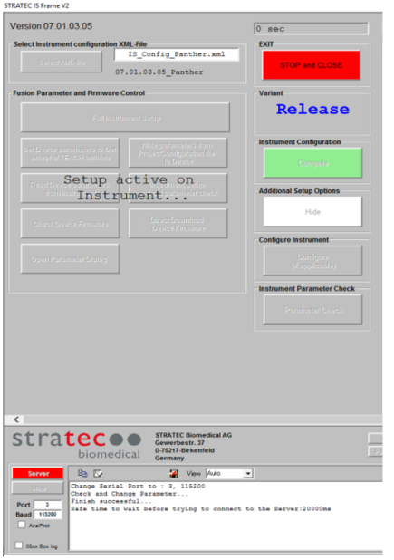
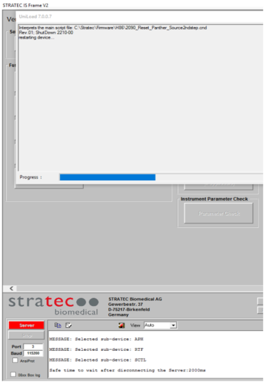
- When installing new modules or PCBs the following message may appear. Select OK to continue.
- Once finished, click OK, then Click STOP and CLOSE.
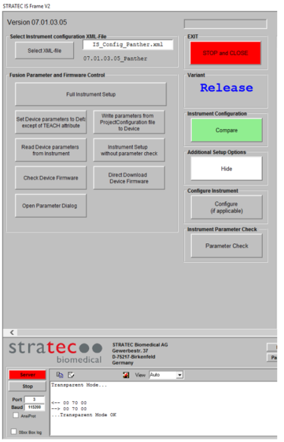
- If downloading firmware on a ATLAS (ROKA/IEH) System, please follow TB-01307 and update all incubator parameters per the TB.
- Make sure to update X-Axis parameters if changed prior to downloading firmware, TB-02024.
- For an installation, continue to Panels and Canopy Installation.
 button at the top of the page to send feedback, comments, or change requests.
button at the top of the page to send feedback, comments, or change requests.